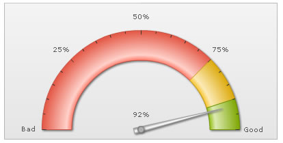

| Angular Gauge JSON Data Format |
|
Starting FusionWidgets XT, charts/gauges can be rendered using JSON (JavaScript Object Notation) data. JSON is a light-weight and simple data format that is easy to read and understand. Though derived from JavaScript, the data structure is language-independent, with encoders and parsers available for virtually every programming language.
A FusionWidgets gauge is controlled by a single JSON data source i.e., the same source contains data to plot, functional settings and cosmetic properties. There are many properties that you can define for each chart type. However, it is not necessary to define all the properties for a given chart. For example, if you do not want to change the default setting of the canvas (color, alpha etc.), you don't have to define any property for the canvas - the default values will be assumed. Thus, each chart can be generated using minimal properties. |
In this page, we will discuss about how to use JSON data to create an Angular gauge. |
|  |
| A sample JSON data for an Angular gauge looks as under: |
{
|
| Brief Explanation |
| The chart Object defines all the settings that help to manipulate the gauge. You can find the list of all the attributes for this Object in the XML Sheet of Angular Gauge. In the most general form, chart attributes represent the following JSON format: Please note that the XML attributes declared in the XML Sheet for Angular Gauge are same as the JSON keys in FusionWidgets JSON data format. Moving on, the colorrange Object defines an array of color objects. The color objects are contained within the color Array. Each color object contains the color codes and the minimum and maximum values required to define the color range. A typical color object looks like this: { "minvalue": "0", "maxvalue" : "75", "color" : "FF654F" }
Next, we have the dials Object. The dial Array defines the dials of the gauge. Each element of this Array is an object that defines the value of the dial through the value key as shown below: "dials": { "dial": [ { "value": "92", "rearextension": "10" } ] } If you want to have multiple dials on a single gauge, just keep on adding new elements to the dial Array with the required values. Important: To use JSON data format with FusionWidgets, you'll need to embed the charts using FusionCharts JavaScript Class (FusionCharts.js), as the charts internally still use XML. The JavaScript class provides the bridge between JSON and XML. |